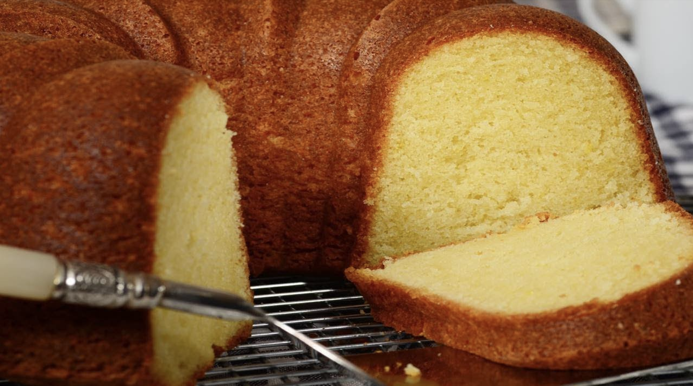

01/Feb
Cream Cheese Pound Cake
Pound Cakes have been around for a long time. And I think the reason why they never go out of style, is that they're just a great tasting cake. This Cream Cheese Pound Cake is no exception. It has a lovely golden brown crust that is sweet and so wonderfully crisp on the day it's made. While the crust does soften with storage, it still maintains its excellent flavor. And I like how it contrasts so beautifully with the buttery yellow interior that's soft and moist and rich with cream cheese, butter, and eggs. Vanilla is the flavoring in this pound cake, along with a little lemon zest which provides a nice citrus flavor plus it helps to balance both the sweetness and richness of the cake. I really don't think this cake needs an icing, it just perfect as is with a hot cup of tea or coffee. But for a plated dessert you can serve it with either fresh fruit or a fruit sauce, along with softly whipped cream, a scoop of ice cream or even a sorbet. This is a large cake that will serve at least 14, but it also stores very well and leftovers can be frozen.

It is important when making this pound cake to have the cream cheese, butter and eggs at room temperature as this enables the maximum amount of air to be beaten into the batter. There is a tendency for the batter to curdle when adding the eggs but having the eggs at room temperature and adding each egg separately will help to prevent this. But don't worry if it does curdle as once the flour is added the batter will smooth out. The cake is baked in a bundt pan and if you are using a dark colored bundt pan reduce the oven temperature to 325 degrees F (165 degrees C). The reason we do this is because a dark colored pan absorbs more of the energy coming from the oven walls so it becomes hotter and transmits heat faster than a light colored pan. Reducing the oven temperature slightly will help compensate for this.
Cream Cheese Pound Cake: Preheat oven to 350 degrees F (180 degrees C) and place oven rack in center of oven. Butter and flour (or spray with a non stick spray that contains flour) a 10 inch (25 cm) bundt pan. In a large bowl, sift together the flour, baking powder, baking soda, and salt.
In the bowl of your electric mixer (with the paddle attachment), or with a hand mixer, beat the butter and cream cheese until smooth. Gradually add the sugar, scraping down the sides of the bowl as needed. Continue beating on medium-high speed until light and fluffy (about 5 minutes). Add the vanilla and lemon zest and beat until incorporated. Add the eggs, one at a time, mixing well after each addition. Scrape down the sides of the bowl as needed. Add the flour mixture, in three additions, and mix just until incorporated. Pour the batter into the prepared pan and smooth the top. Bake for about 55 - 70 minutes or until the cake is golden brown and a toothpick inserted in the center comes out clean.